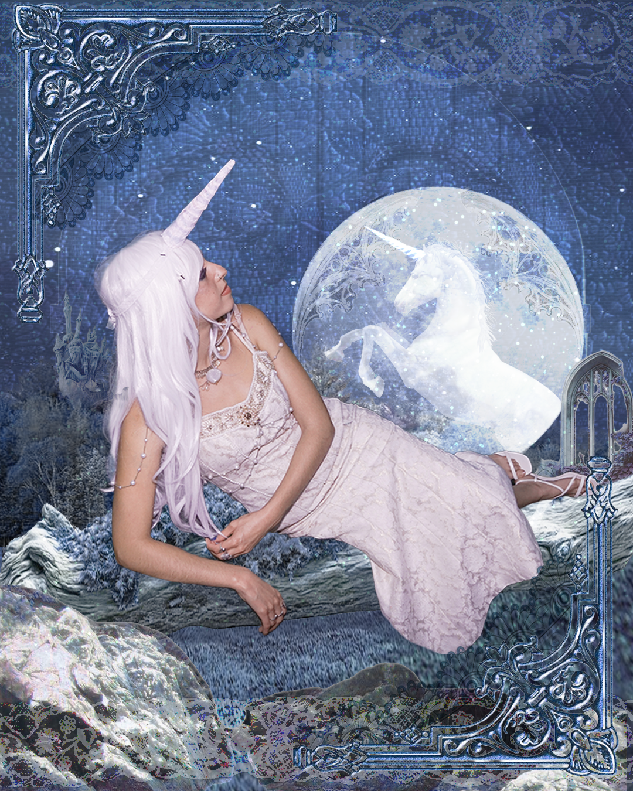
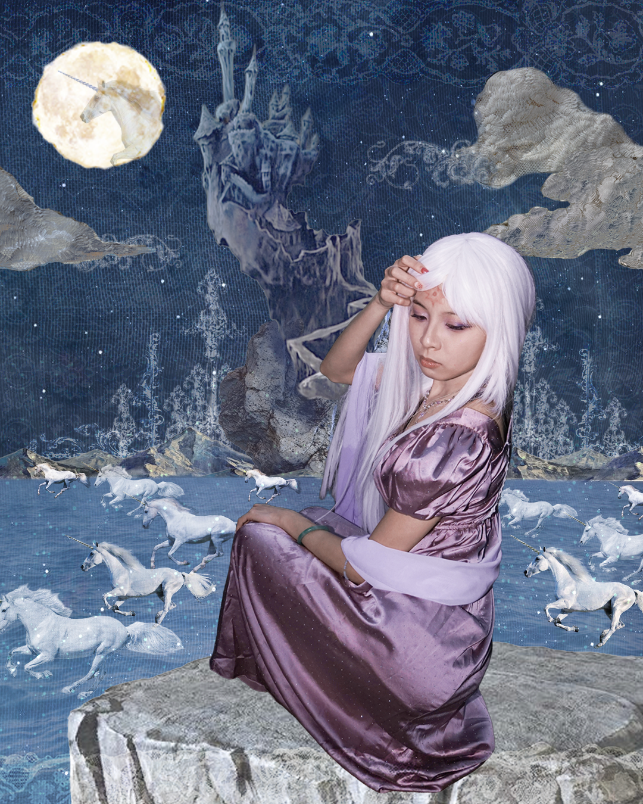
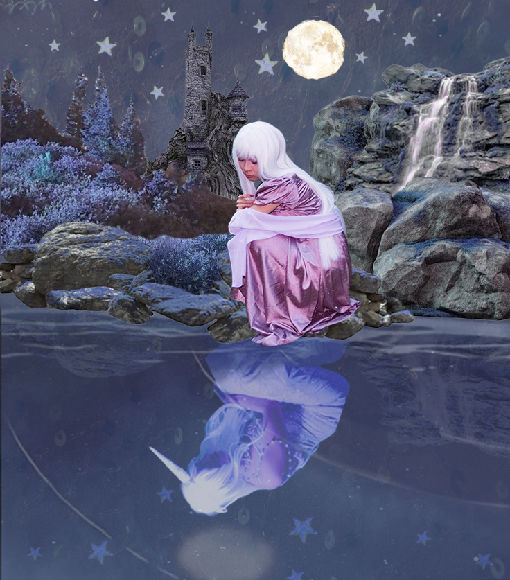

Graphic Design
The Last Unicorn Editorial
Editorial Graphic Design





Graphic designs created for an editorial photoshoot I co-creative directed, inspired by The Last Unicorn. Designed to evoke the feeling of flipping through a fantasy storybook, I layered media and textures to build a fantastical environment to capture the magic and childhood nostalgia of the tale while bringing my vision for the shoot to life.